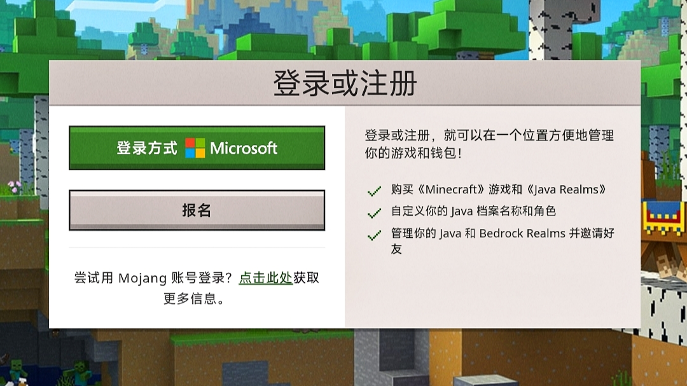
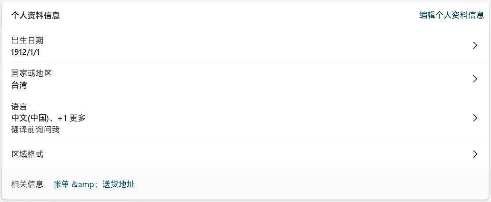
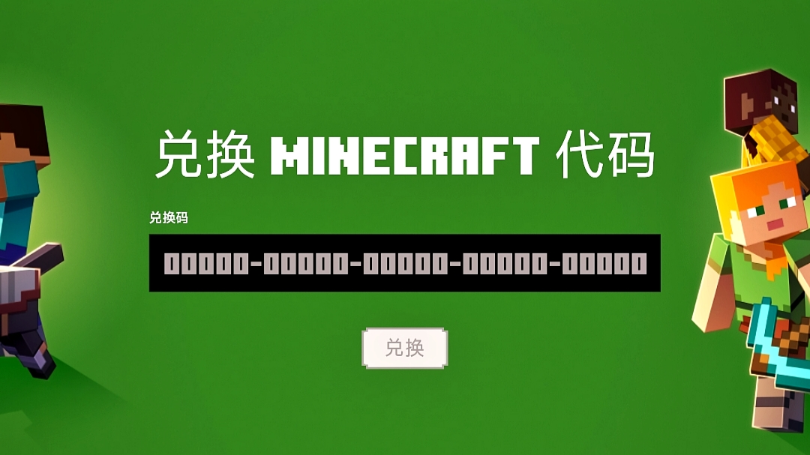
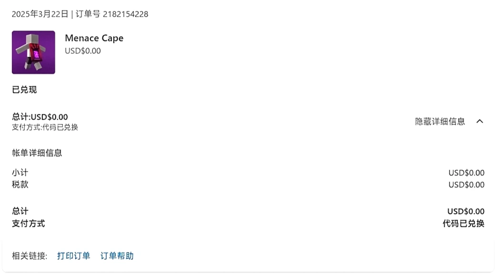
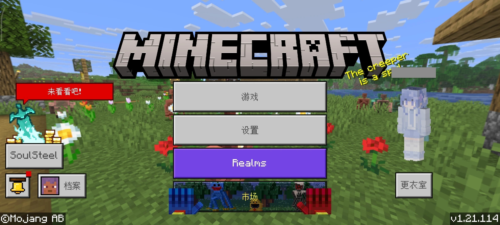
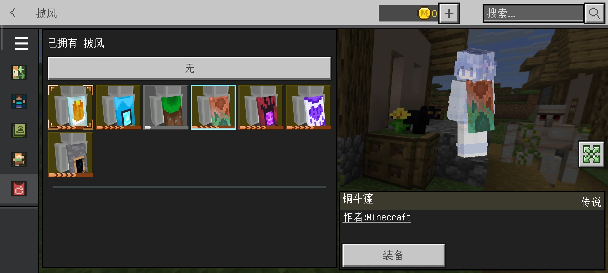

如何兑换Minecraft披风
确保你有Minecraft正版账号，点击此处 进入Minecraft官网，登录你绑定了Minecraft的微软账号。

登录后，点击此处 进入兑换页面，输入兑换码，点击兑换。若提示“所在国家或地区不支持”，请查看微软账户个人资料信息，将国家或地区改为非中国大陆地区。


查看你的邮箱或微软订单历史记录，若发现类似的订单信息，说明兑换成功。

JAVA版自动同步存在延迟，或不会自动同步，需要登录相同微软账号的Minecraft基岩版，在披风界面装备披风以同步到JAVA。

